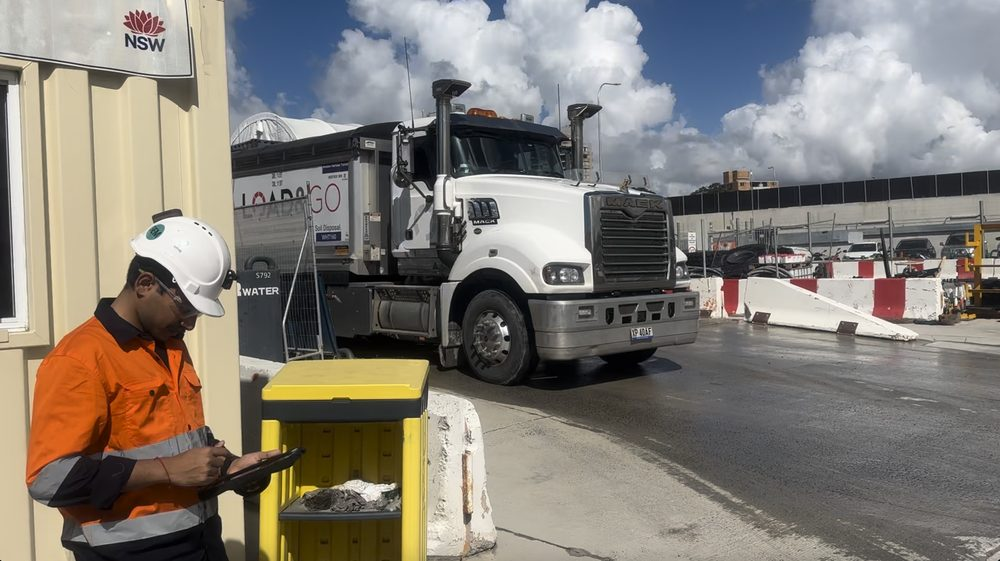
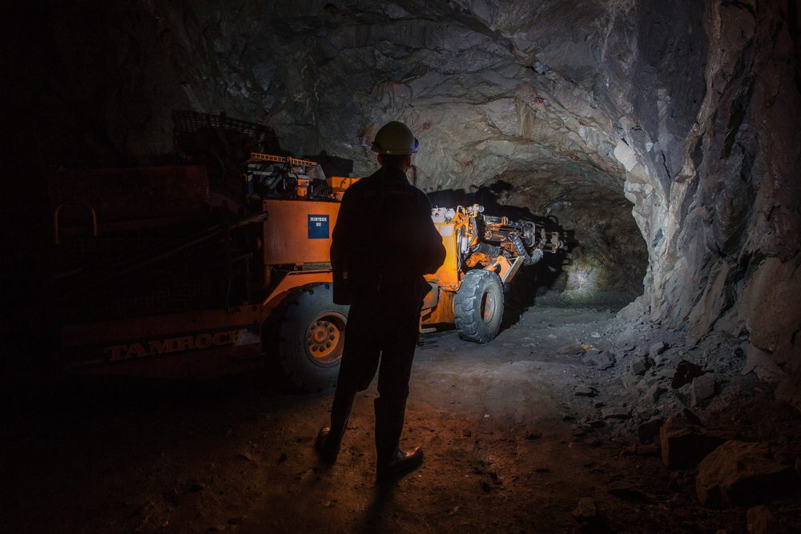
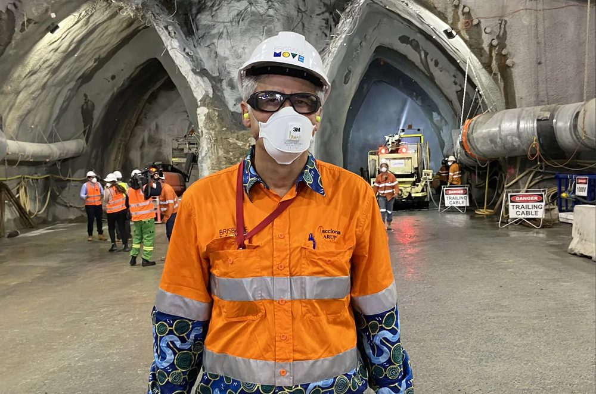
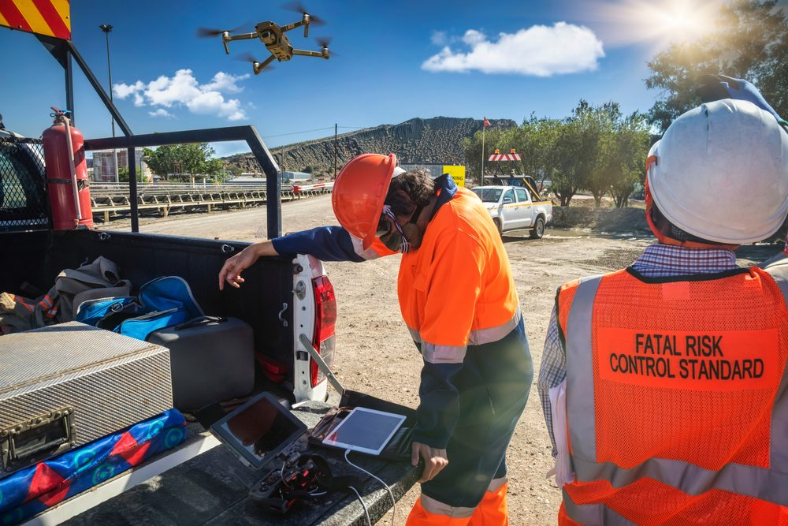
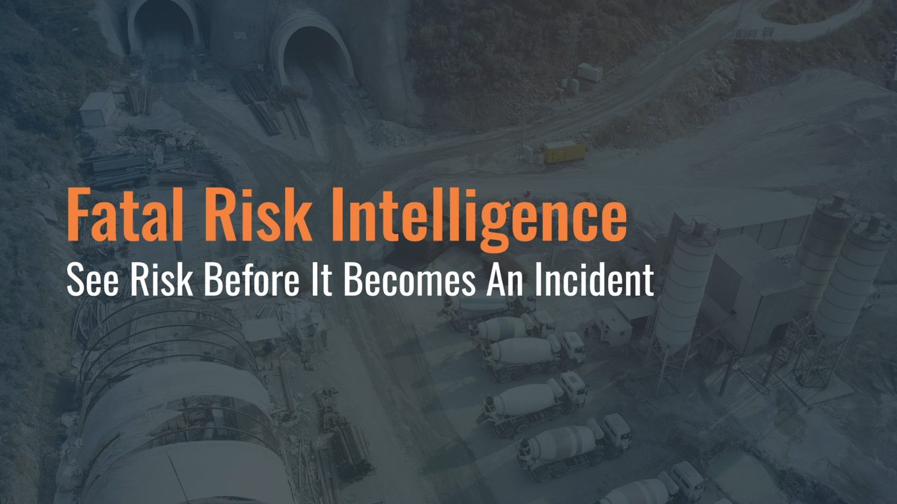
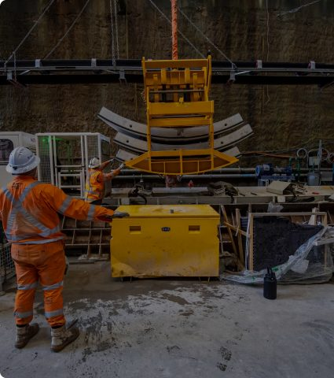
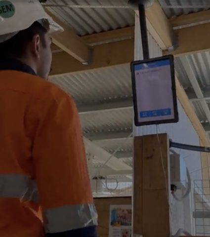
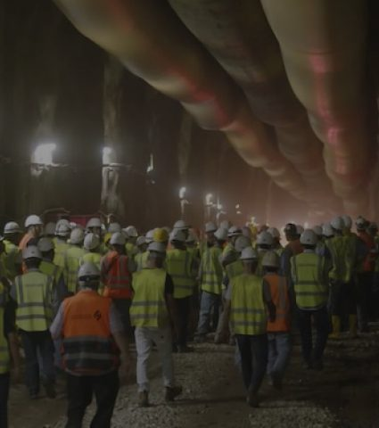
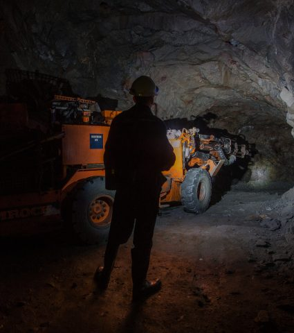
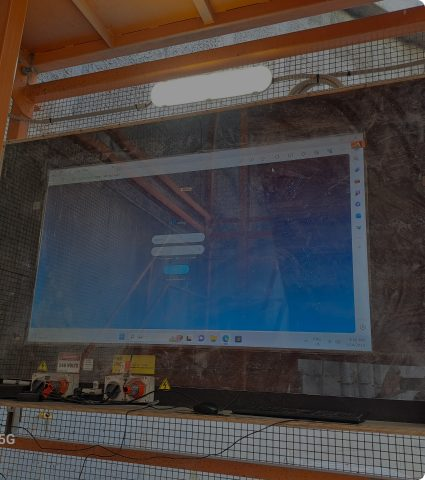

Safety Doesn't Start With An Incident
Traditional safety systems record what has already happened.
Fatal Risk Intelligence continuously understands how changing operational conditions interact, identifies emerging exposure before incidents occur, and provides the operational understanding needed to intervene while outcomes can still be changed.
The Invisible Risks Behind Serious Incidents
Major incidents rarely result from a single failure.
They develop when operational pressures, environmental conditions and human factors begin interacting beneath normal operations.
Common fatal risk categories include:

People move

Vehicles move
Equipment operates

The environment changes
Work activities overlap
Individually these changes may appear insignificant.
Together they continuously create, increase or reduce operational exposure.
The challenge isn't collecting more data.
The challenge is understanding how these changing conditions interact before they become incidents.
Understanding Exposure
Before Incidents Occur
Rather than waiting for an unsafe event to occur, the Atlas Platform continuously analyses operational conditions across the entire operation, identifying where fatal risks are developing and providing the understanding required for earlier intervention.
This allows organisations to move beyond reactive safety management towards continuous operational risk understanding.

Traditional safety systems focus on events.
Fatal Risk Intelligence focuses on exposure
How Fatal Risk Intelligence Works
Operational Data
Atlas Intelligence Platform
Continuously understands how changing conditions interact
Fatal Risk Intelligence Is Built On Operational Understanding

Fatal risks rarely develop because of a single event.

They emerge as operational conditions interact over time.
The Atlas Platform continuously connects information from workforce activity, vehicle movements, operational equipment, environmental monitoring and production systems to understand how those interactions influence exposure across the operation.
Rather than analysing each system independently, Atlas creates a live operational understanding that reveals where attention is required before incidents occur.
Understanding The Conditions That Create Fatal Risk
Vehicle Interaction
Sensors and systems feed real data into one platform
Working At Height
AI finds patterns humans would miss in isolation
Hazardous Atmospheres
Alert the right people at the right moment with context
Fire & Explosion
Identify changing conditions that increase ignition and escalation risk.
Fatigue & Human Performance
Understand how operational demands influence human performance and decision making.
Emergency Response
Maintain continuous situational awareness during evolving emergency events.
The Fatal Risk Dashboard
Instead of simply displaying information, the dashboard provides operational understanding.
Features:
- Live operational map
- Exposure indicators
- Risk drivers
- AI pattern recognition
- Recommended interventions
- Operational alerts
- Incident context
- Workforce status
- Vehicle status
- Environmental monitoring

Understanding Why Exposure Is Increasing
One of the biggest differentiators.

Equipment telemetry
Material movement

Production reporting

Workforce activity

Environmental monitoring

Operational events
The challenge is understanding how these factors influence production outcomes.
Instead of saying “High Vehicle Risk”
“High Vehicle Risk”
Atlas explains
The Operational Digital Twin continuously analyses information from across the operational environment, helping organisations identify relationships, dependencies and emerging operational conditions that may otherwise remain hidden.
Rather than simply presenting data, the platform helps transform operational information into meaningful operational insight.
That is operational understanding.

Understand Exposure Before Incidents Occur
Every operation generates thousands of changing conditions every minute.
The organisations that understand how those conditions interact make better operational decisions, intervene earlier and create safer, more efficient operations.